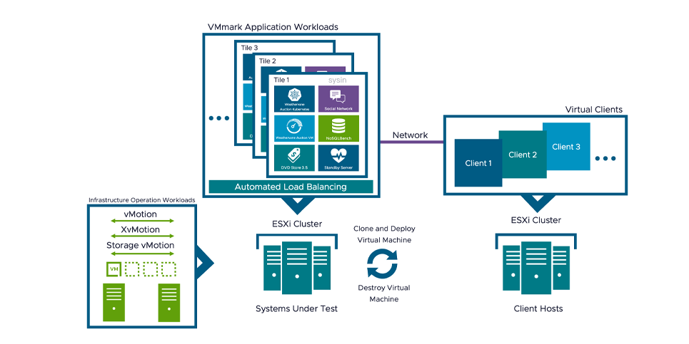
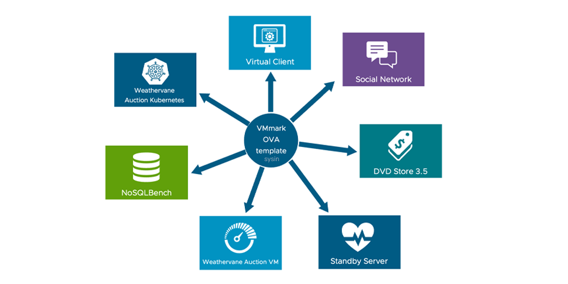
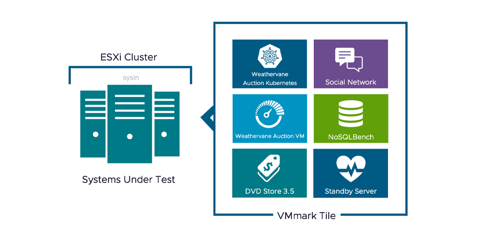

请访问原文链接：VMmark 4.0.2 - 虚拟化平台基准测试 查看最新版。原创作品，转载请保留出处。
作者主页：sysin.org
VMmark 是一款免费工具，用于衡量虚拟化平台的性能和可扩展性。
产品概述
什么是 VMmark 基准？
VMmark 是硬件供应商和其他公司用来衡量虚拟化平台的性能和可扩展性的免费工具。
VMmark 基准测试：
- 允许对虚拟数据中心性能进行准确、可靠的基准测试。
- 允许比较不同虚拟化平台的性能。
- 可用于确定虚拟化环境中硬件、软件或配置更改的性能影响。
为什么要进行虚拟化平台基准测试？
云环境通常将多个不同的工作负载收集到虚拟化平台上 - 访问共享存储和网络资源的物理服务器的集合。针对非虚拟化环境的传统单一工作负载性能和可扩展性基准在开发时既没有考虑虚拟机也没有考虑云环境。即使单服务器虚拟化基准测试也无法完全体现当今虚拟化数据中心的复杂性。
VMmark 4：Web 规模多服务器虚拟化平台基准

VMmark 1.x 凭借其独特的基于图块的多应用程序设计，开创了单服务器虚拟化基准测试的先河。VMmark 2.x 将其扩展到多个服务器和平台级工作负载。VMmark 3.x 解决了向高度可扩展的 “第三平台” 应用程序和日益复杂的 OLTP 工作负载的转变。VMmark 4 基于这些早期的 VMmark 版本构建，增加了传统 Java 和数据库工作负载消耗的资源，并添加了现代企业数据中心常见的 Kubernetes、Docker 容器、NoSQL 和社交网络工作负载。
自动基准安装

VMmark 4 具有高度自动化的设置和切片克隆流程，使基准测试部署快速、轻松，几乎不需要手动干预。VMmark 4 始终使用免费或开源软件，无需购买软件许可证，并且 VMmark.ova 在一个可下载模板中包含所有需要的软件。
VMmark 如何工作？

VMmark 基准测试将常见的虚拟化应用程序组合到称为 “图块” 的预定义捆绑包中。虚拟化平台可以运行的 VMmark 切片数量，以及这些切片和各种平台级工作负载的累积性能，决定了 VMmark 4 分数。
具有 400 多项已发布结果的同行评审基准
在 VMmark 结果页面发布之前，每一个 VMmark 结果都必须提交给由多家发布过 VMmark 基准测试结果的公司组成的评审小组，以确保基准测试的公平性和完整性。
自 2007 年推出以来，VMmark 网站上已发布了 400 多项 VMmark 结果，VMmark 已成为评估虚拟化平台性能的标准。
功能简介
以应用程序为中心的实际工作负载基准测试
VMmark 使用代表数据中心中常见的高度可扩展且复杂的应用程序的工作负载。VMware 与其合作伙伴密切合作来设计和实施该基准，并收集了广泛的客户反馈，以了解这些应用程序通常如何在虚拟化环境中使用。
自缩放应用程序
弹性对于衡量当今数据中心的实际工作负载至关重要。对于自扩展应用程序来说，添加和减少资源以满足需求的行为现在比以往任何时候都更加常见。VMmark 4 包含此组件以及循环应用程序配置文件，以更准确地表示当今的突发环境。
独特的基于图块的实施
虚拟化数据中心的工作单元可以有效地定义为执行一组不同工作负载的虚拟机的集合。VMmark 基准测试将此工作单元称为 “图块”。每个 VMmark 磁贴都与一个客户端系统配对，该客户端系统驱动该磁贴的虚拟机执行各种任务，有些是每个虚拟机内部的任务，有些涉及磁贴中的其他虚拟机，有些涉及客户端系统。
在后台执行基础设施操作的同时，数据中心中的多个系统可以容纳的切片总数可以粗略地衡量该数据中心的整合能力。这些区块内工作负载的性能提供了对数据中心整体性能的精细衡量，并与管理操作的性能相结合，用于计算 VMmark 基准分数。
多服务器虚拟化数据中心基准测试
快速的创新步伐迅速改变了典型的服务器使用方式，支持更轻松地虚拟化突发性和繁重的工作负载、动态虚拟机重新定位 (vMotion)、动态数据存储重新定位 (Storage vMotion) 以及跨大规模多数据中心的许多配置和管理任务的自动化。- 主机环境。在此范例中，CPU、网络、磁盘和内存子系统上的很大一部分压力可能是由底层基础设施操作产生的。跨多个主机的负载平衡也会极大地影响应用程序性能。任何相关的基准测试方法仍然必须关注以用户为中心的应用程序性能，同时考虑该基础设施活动对整体平台性能的影响。除了传统的应用程序级工作负载之外，VMmark 4 通过合并各种平台级工作负载（例如虚拟机迁移、存储迁移、无共享迁移、克隆和部署以及快照操作）来生成真实的平台性能衡量标准。
高精度评分方法
在持续至少三个小时的 VMmark 基准测试运行期间，每 60 秒收集一次单独的性能指标。这些指标中的每一个都代表单个应用程序或基础设施工作负载的性能。
通过相对于参考系统规范化不同的性能指标（例如每秒操作数或每秒事务数），计算每个图块的应用程序工作负载指标并将其聚合为该图块的分数。然后计算归一化分数的几何平均值作为图块的最终分数。最后，将所得的每个图块分数相加，以创建最终指标的应用程序工作负载部分。
使用类似的计算来创建最终指标的基础设施工作负载部分，不同之处在于，与应用程序工作负载不同，基础设施工作负载不是由用户显式缩放的。因此，基础设施工作负载被编译为单个组，并且不需要多块总和。
最终基准分数按加权平均值计算：应用程序工作负载部分占 80%，基础设施工作负载部分占 20%。选择这些权重是为了反映基础设施和应用程序工作负载对总体资源需求的相对贡献。
为了使最终的基准分数被视为合规，基准运行还必须满足许多条件，包括最低服务质量要求。
除了总体基准分数之外，VMmark 完整披露报告还包括每个底层工作负载的原始和标准化结果以及虚拟化平台配置的完整详细信息。在某些情况下，研究工作负载指标以及平台配置可以深入了解系统性能和扩展。
准备好开始了吗？
也感兴趣
下载地址
VMmark 4
百度网盘链接：https://pan.baidu.com/s/1Cm-Tn0iKnlSMyQnSR81-4Q?pwd=gvuh
-
VMmark 4.0.0 Template OVA -
Deprecated
Release Date: 2024-04-18 -
VMmark 4.0.1 Template OVA -
Deprecated
Release Date: 2024-05-28 -
VMmark 4.0.2 Template OVA - 旧版因已知问题已弃用，请使用此版本
VMmark-4.0.2-209.ova (7.72 GB)
Release Date: 2024-11-08

文章用于推荐和分享优秀的软件产品及其相关技术，所有软件默认提供官方原版（免费版或试用版），免费分享。对于部分产品笔者加入了自己的理解和分析，方便学习和研究使用。任何内容若侵犯了您的版权，请联系作者删除。如果您喜欢这篇文章或者觉得它对您有所帮助，或者发现有不当之处，欢迎您发表评论，也欢迎您分享这个网站，或者赞赏一下作者，谢谢！
 支付宝赞赏
支付宝赞赏
 微信赞赏
微信赞赏
赞赏一下